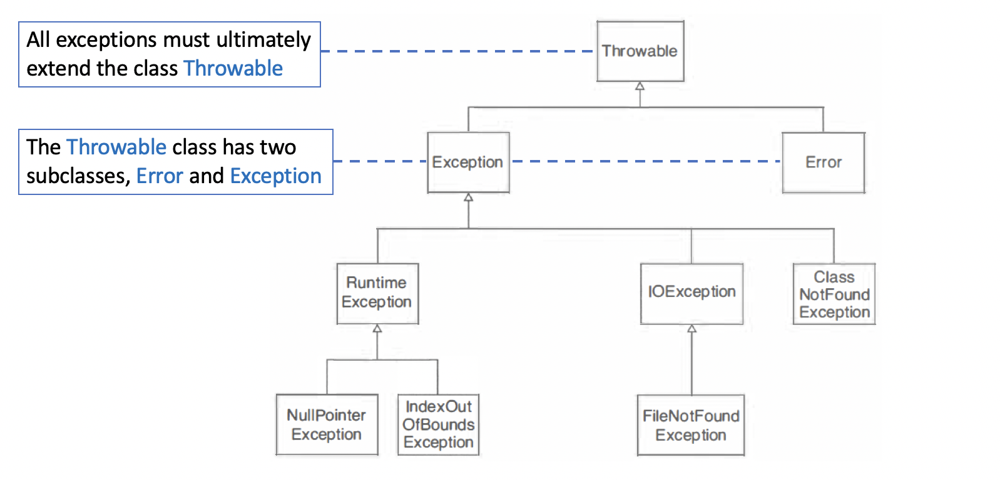
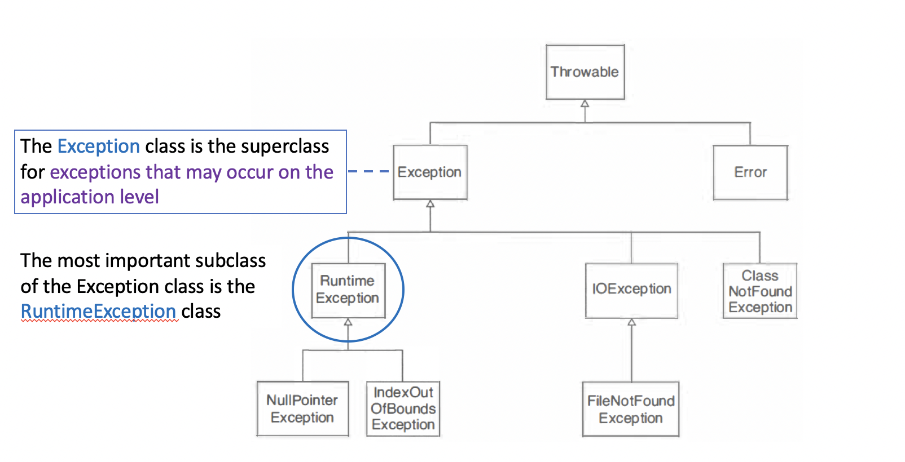
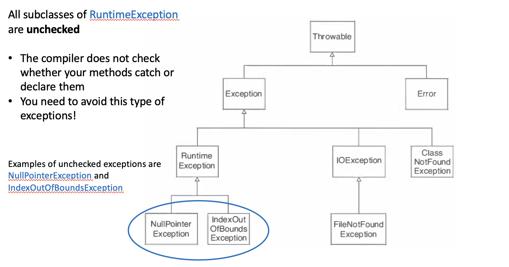
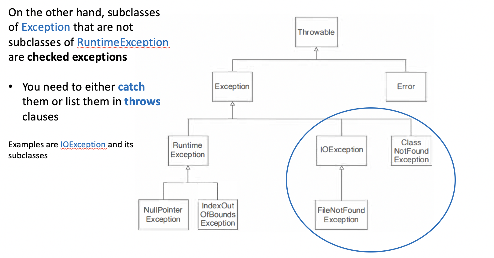
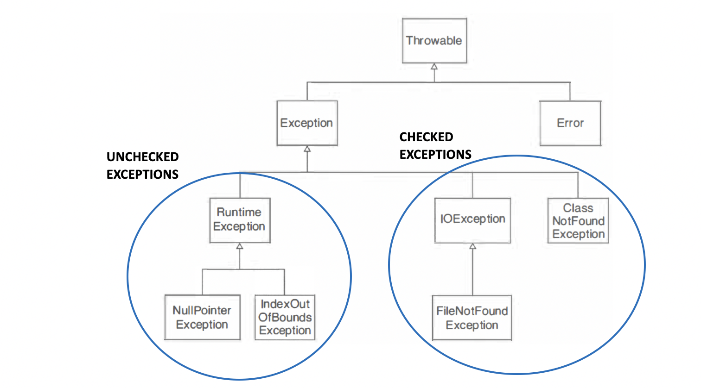
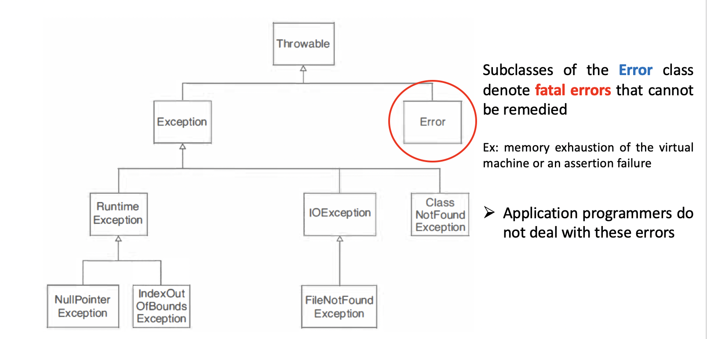
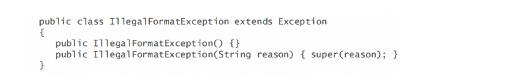
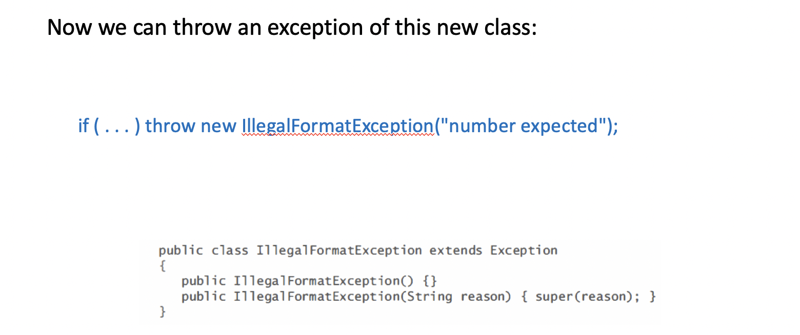

5. Hierarchy Of ExceptionClasses
- The Java library uses inheritance to categorize a large number of exception classes


All subclasses of RuntimeException are unchecked
The compiler does not check whether your methods catch or declare them
You need to avoid this type of exceptions!




Standard library or brand new?
When you encounter an error condition in your code, and you want to throw an exception, then you need to make a decision whether to use an exception class in the standard library, or whether to design your own exception class
If you design your own class, you first need to decide whether the exception should be
checkedoruncheckedUncheckedexceptions must be subclasses of RuntimeException
When you design an exception class, you should provide 2 constructors:
A
default constructorA
constructorwith astring parameterthat signifies the reason for the exception- This constructor should simply pass the reason string to the superclass constructor
Example: You want to throw an
IIIegalFormatExceptionwhen a user enters information in the wrong formatSince user actions are beyond the control of the programmer, we design a
checked exceptionWe inherit from the
Exceptionclass but not fromRuntimeException


Assignment
- Start with the following class.
public class BankAccount
{
public void deposit(double amount) { balance += amount; }
public void withdraw(double amount) { balance -= amount; }
public double getBalance() { return balance; }
private double balance;
}
Define a subclass
CheckingAccountwith a constructorCheckingAccount(double initialBalance)and a method voiddeductFees()that deducts the fees and resets the transaction count:A checking account is just like a bank account, except that there is a service charge for deposits and withdrawals
Each month, the first five transactions are free
All further transactions cost $1
You will also need to redefine the
depositandwithdrawmethodsForm subclasses
HourlyEmployeeandSalariedEmployeeof theEmployeeclass.Provide constructors:
HourlyEmployee(String aName, double anHourlySalary)
SalariedEmployee(String aName, double anAnnualSalary)
Add a method
getWeeklySalaryAssume that hourly employees work 40 hours per week, and that salaried employees are paid 1/52 of their annual salary every week.